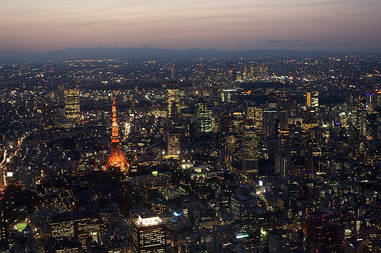

Prefectura de Tokio

Población: 14 millones
Superficie: 2,194 km²
Tokio es la capital de Japón y una ciudad moderna llena de tecnología y cultura. Es conocida por su vibrante vida urbana, arquitectura moderna y tradiciones culturales.
Atracciones Turísticas:
- Templo Senso-ji
- Palacio Imperial
- Tokyo Skytree
Prefectura de Kioto
Población: 1.46 millones
Superficie: 461 km²
Kioto es famosa por sus templos budistas, jardines y tradiciones culturales. Es conocida por ser el centro histórico de Japón, con una rica herencia cultural y arquitectónica.
Atracciones Turísticas:
- Templo Kinkaku-ji
- Templo Fushimi Inari
- Jardín del Templo Ryoan-ji
Prefectura de Osaka
Población: 2.75 millones
Superficie: 223 km²
Osaka es conocida por su comida y el famoso Castillo de Osaka. Es un importante centro comercial y cultural, con una vibrante vida nocturna y muchas atracciones.
Atracciones Turísticas:
- Castillo de Osaka
- Universal Studios Japón
- Acuario Kaiyukan